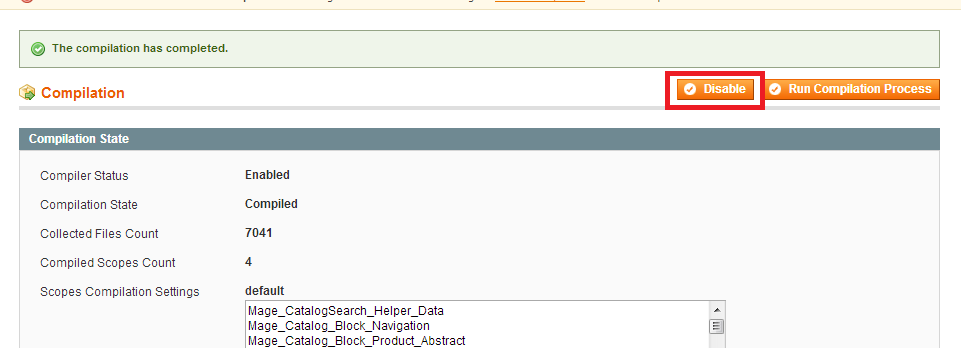

Mage Testing
Table of Contents
Description
Version 1.0.0
Extension page: http://www.rocketweb.com/mage-testing
Mage Testing extension allows you to easily import your store to Mage Testing service.
Features
- Assists in importing store to Mage Testing site.
- Allows to create system files backup for Magento versions older than 1.7
Installation
Backup your data
Backup the database and your store's web directory.
Disable Compilation
This step is for Magento 1.4+ versions. If you are running an older version, this step can be skipped. In the Magento admin panel, go to System->Tools->Compilation. In case "Compiler Status" is "Enabled", click on the "Disable" button (in case the status is disabled you can skip this step):

This screen should now look like this:

Download and Extract
Download and extract (unzip) the extension's contents on you computer. Navigate inside the extracted folder.
Upload files
Using a FTP client, upload the content of the extension directory to the store's document root, so that the app directory in the extension folder overwrites the app directory on the server. If asked to replace any files, select "Yes".
Clear the cache
In the Magento admin panel, go to System->Cache Management and press the "Flush Magento Cache" button:

Importing store
Preparation
Before you import your store to Mage Testing you need to create account on Mage Testing site. After you successfully register and activate your account, navigate to Mage Testing My Account page where you can find your API key. You will need your Mage Testing username and API key in order to use extension.
Step 1 - Account Set Up
Fill both username and API key fields and Proceed. Extension will validate your API key and will proceed to next step if credentials are valid.
Step 2 - Prepare your store backup
In this step you can prepare and choose your store backup. Initially list of backups is empty, so use "Generate backup now" button to generate backup. It can take a while, when it completes there should be success message displayed above and your backup should appear on backup list. At that point you can click "Process" to move to next step.
Step 3 - Prepare your database backup
Now create database backup by clicking on "Generate backup now". When it completes with success message, click on "Proceed" to go to next step.
Step 4 - Connection
Fill connection details to let Mage Testing site connect with your store and download system and database backups. Theese backups will be used to import your store to Mage Testing site.
Make sure to provide proper path to Magento installation. "Find path" button can help with that as soon as you use SSH protocol. If you use FTP protocol and you are not sure what is Magento path, please contact with your hosting provider.
Step 5 - Import
At this point review details and click on "Import Store". This will connect with Mage Testing site and schedule store import there.
You can check installation status on Success page or in Mage Testing site dashboard.
Backup types
Mage Testing extension introduces two new system backup types:
- System (Excluding Media and DB backups)
- This backup is similar to default "System" backup type provided by Magento. This backup contains store files excluding
media/similar to "System Backup". However, this new type also excludes database backup located invar/directory. You can create backup of this type in second step of import wizard and you can choose from backups of this type in the dropdown list there. - Clean DB (without log and cache tables)
- This backup is similar to default Magento database backup. However, it additionally excludes some tables which can contain significant amount of data such as log or cache tables. This backup could be created in third step of wizard and you can choose from backups of this type in the dropdown list at Step 3.
Both new backup types are visible on Tools -> Backups page and you can download and delete them there manually whenever needed.